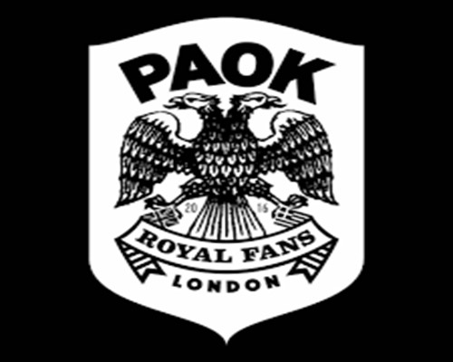
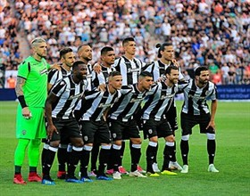
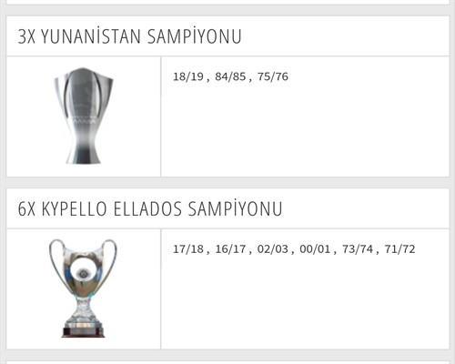

AMBLEMAmblemin anlamı atalarının hedeflediği doğu-batı egemenliğini sağlamaktır. |
PAOK FUTBOL KLÜBÜ TARİHİPAOK FC, Yunanistan'ın Selanik kentinde kurulmuş bir futbol kulübüdür. 1875 yılında İstanbul'un bir bölgesi olan Pera'da Hermes adıyla kuruldu ve Türk-Yunan Savaşı'nın etkisiyle Yunanistan'a Selanik'e taşınıp 1926 yılında şu anki adı alan PAOK Thessaloniki Spor Kulübü'nün futbol dalıdır. 1923 yılında istanbul'dan selanik'e göç eden 3 Beşiktaş'lı sporcunun ilk başlarda "panthessalonikeios athlitikos omilos" adı altında kurdukları bu kulüp 1926 yılında İstanbul'dan göç eden diğer rumların yerli rumları yönetimde istememesinin ardından "Paok" adı ("panthessalonikeios athlitikos omilos konstantinoupoliton" yani türkçesi "İstanbul`lu Selanik Kulupleri Birliği"ymiş.) altında 2. kez kurulmuştur. Kulüp tarihçesinde de bundan bahsedip Mustafa Kemal Atatürk'ün şehrinin takımı oldukları için övünürler.. Siyah-beyaz renklere sahip olan kulüp, maçlarını 29.800 kişilik Toumba Stadı'nda oynar. Takım şu anda Alpha Ethniki'de mücadele etmektedir. Amblemlerinde kuzeyin çift başlı kartalı yer alır.Aek'in ambleminde ise güneyin çift başlı kartalı bulunmaktadır. Bu durumda bir Osmanlı takımı demekten ziyade bizans takımı demek daha doğru olur.Maçlarını 28.700 kişilik Toumpa Stadı'nda oynarlar. Arislilere skouliki* dedikleri için aris maçlarından önce sahada gezen tavuklar görmek gayet doğaldır. |
OYUNCULAR *"31 Alexandros Paschalakis"*| *"3 Leonardo De Matos Cruz"*| *"5 Fernando Lopes dos Santos"*| *"3 Alin Dorinel Tosca"*| *"5 José Ángel Crespo Rincón"*| *"8 Maurício José da Silveira"*| *"19 Pontus Wernbloom"*| *"21 Diego Biseswar"*| *"74 Amr Medhat Warda"*| *"98 Leonardo Rodrigues Lima"*| *"47 Chuba Akpom"*|Takımımız 18/19 sezonunu şampiyon tamamlamıştır. |
BAŞARILAR |
İDARİ VE TEKNİK KADRO
TAKIM MENEJERİ TEKNİK DİREKTÖR GLOBAL SPORTİF DİREKTÖR MÜDÜR OYUNCU AJANI RAKİP ANALİSTİ |